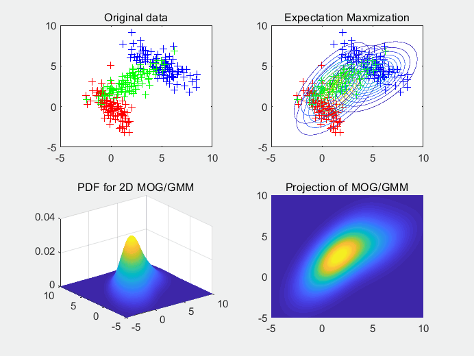

Open Sesame: A voice and speaker recognition system using machine learning
Feature engineering

Mel Frequency Cepstral Co-efficients
Melspectrogram/ Band energy ratio
Spectral centroid / Root mean square
Machine learning model
using a random forest framework to assess the features,
we acheieved an accuracy of 96%
with a cross validation score of 92%.
After testing a vareity of models such as: SVC, Linear regression,
decision tree, we found that the forest had the highest accruacy during testing.

Click to enter your password
Note
Start talking as soon as
you see "Recording has started..." message